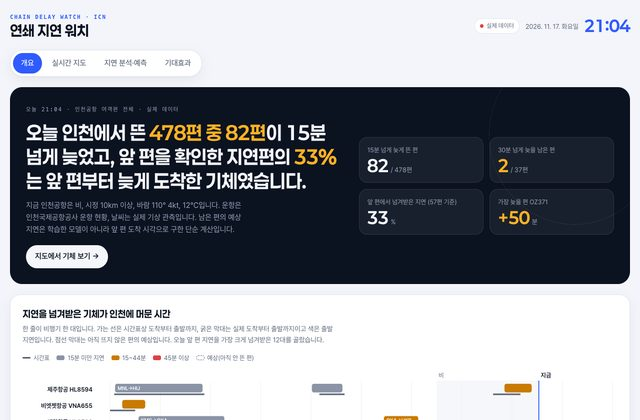
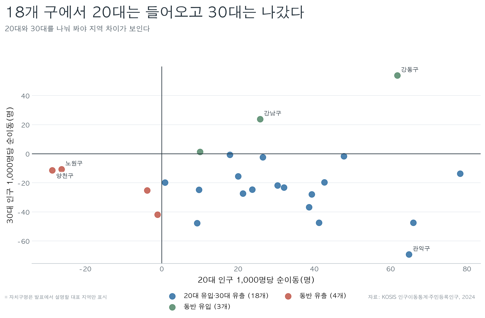
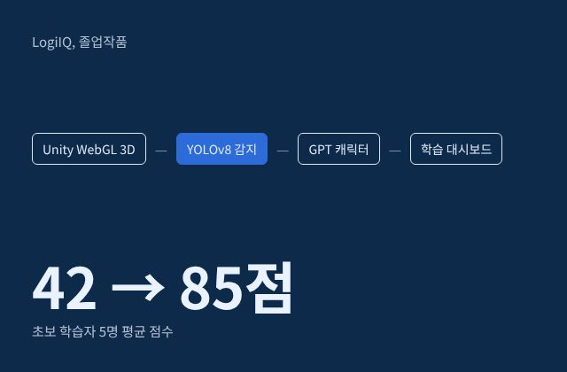
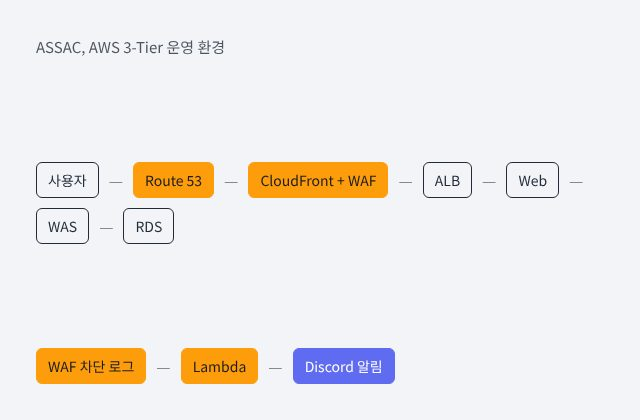

외부·공공 데이터를 연동해 수집하고, 기준이 다른 데이터를 하나로 정제하고, 검색 품질을 숫자로 검증해 왔습니다.
RAG 검색 단계를 직접 만들어 9개 조합을 Hit@k·MRR로 비교했고, 외부 API 5종을 연동한 수집 파이프라인을 매일 운영하고 있습니다.
청킹 · 임베딩 · 벡터 DB · 하이브리드 검색
Hit@5 0.772 → 0.976
API 5종 연동 · 서버리스 중계 · 하루 2회 자동 수집
인증 오류 원인 추적·해결
공공 데이터 5종 → 100행 통합
로봇 센서·영상 실시간 전송(현장 적용)
대표 역량 · 외부·공공 데이터를 연동해 수집하고, 정제·통합하고, 검색 품질을 지표로 검증하는 데이터 파이프라인
| 분야 | 기술 | 사용한 곳 |
|---|---|---|
| 데이터 처리 | Python, pandas | RAG 데이터 준비, 공공 데이터 통합 |
| 검색·임베딩 | BM25, Qdrant(코사인), multilingual-e5-small, RRF | RAG 검색 파이프라인 |
| 품질 평가 | Hit@k, MRR, 검색 시간 측정 | RAG 검색 파이프라인 |
| AI 모델·LLM | YOLOv8 학습·라벨링, ChatGPT API | LogiIQ |
| SQL | SQL 기초 | SeSAC 수업 실습 |
| 분야 | 기술 | 사용한 곳 |
|---|---|---|
| 수집·연동 | REST API, Node.js 서버리스 함수, GitHub Actions 스케줄 | 연쇄 지연 워치 |
| 실시간 전송 | Python asyncio, TCP/UDP 소켓 | 모핑아이 현장실습 |
| 클라우드 | AWS Route 53, CloudFront, WAF, ACM, Lambda, CloudWatch Logs | ASSAC |
| IaC·배포 | Terraform, Vercel, GitHub Pages, Cloudflare DNS | ASSAC, 개인 프로젝트 |
| 시각화 | matplotlib, Plotly, Streamlit | 공공 데이터 분석, RAG |
| # | 프로젝트 | 분류 | 기간 · 인원 | 본인 역할 | 증명하는 역량 |
|---|---|---|---|---|---|
| A | RAG 검색 파이프라인 구축 및 검색 품질 평가 | 대표 · 3p | 2026.11 · 개인 | 데이터 준비, 청킹, 임베딩·벡터 DB, 검색기, 평가 설계 전부 | 검색 파이프라인, 품질 평가 |
| B | 외부 API 5종 연동 실시간 데이터 수집 파이프라인 연쇄 지연 워치 | 대표 · 2p | 2026.11 ~ 운영 중 · 개인 | API 연동, 서버리스 중계, 자동 수집, 대시보드, 배포 전부 | 외부 연동, 수집 자동화, 트러블슈팅 |
| C | 공공 데이터 5종 통합 및 데이터 분석 | 보조 · 1p | 2026.08 · 개인 | 수집, 전처리, 지표 설계, 분석, 시각화 전부 | 데이터 정제·통합 |
| D | 실시간 원격 관제 통신 구조 구현 (주)모핑아이 현장실습 | 보조 · 1p | 2025.12 – 2026.02 | 소형 탐사 로봇의 관제 통신 SW | 실시간 데이터 전송 |
| E | AI 모델·LLM 데이터 연동 구조 설계 LogiIQ 졸업작품 | 보조 · 0.5p | 2024.09 – 2025.06 · 4명 | 시스템 간 연동 구조, YOLOv8 학습 데이터, ChatGPT API | 데이터 연동, 비정형 데이터 라벨링 |
| F | 클라우드 보안 로그 수집·알림 파이프라인 ASSAC | 보조 · 0.5p | 2026.09 – 2026.10 · 5명 | 엣지·보안, 차단 로그 알림 Lambda | 로그 수집·가공 자동화 |
2026.11 · 개인 프로젝트 · Python, Qdrant, BM25, multilingual-e5-small, RRF, Streamlit · 데이터: KorQuAD 1.0 dev (CC BY-ND 2.0 KR, 저장소에는 원본 미포함) · 범위: RAG의 검색(Retrieval) 단계만, 생성 단계는 다음 단계
졸업작품 LogiIQ의 AI 캐릭터가 프로젝트 정보 없이 답해 엉뚱한 답을 할 때가 있었습니다. 답을 만들기 전에 근거 문단을 찾아 붙이는 검색 단계가 결과를 가장 크게 좌우합니다.
평가 질문 500개에서 정답 문단을 상위 5개 안에 넣는 비율(Hit@5)을 기준으로, 가장 나은 청크 크기와 검색 방식을 숫자로 고른다.
빨간 테두리 = 직접 구현한 모듈
데이터 정리(정답 위치 저장) · 문장 경계 청크 분할 · 임베딩·Qdrant 적재 · BM25/벡터/RRF 하이브리드 검색기 · 평가 스크립트(9개 조합 자동 비교) · Streamlit 확인 화면
data_prep.py (KorQuAD → 문서 140편 · 질문 500개, seed 42) → chunking.py → embedder.py (e5 / 해시 기준선) → retriever.py (BM25 · Qdrant · RRF) → evaluate.py (청크 크기 × 검색 방식 자동 비교, CSV·표 저장) → app.py (질문하면 근거 문단과 정답 위치 표시)
github.com/k1mchaeyeon/
korean-rag-retrieval-benchmark
results/ 폴더에 전체 결과 표
| 청크 | 검색 방식 | Hit@1 | Hit@5 | MRR@10 | ms/질문 |
|---|---|---|---|---|---|
| 300자 | BM25 / 벡터 / 하이브리드 | 0.826 / 0.720 / 0.802 | 0.966 / 0.912 / 0.952 | 0.887 / 0.803 / 0.873 | 5.6 / 12.8 / 16.9 |
| 600자 | BM25 / 벡터 / 하이브리드 | 0.890 / 0.720 / 0.822 | 0.984 / 0.924 / 0.976 | 0.931 / 0.807 / 0.889 | 2.5 / 9.2 / 12.3 |
| 1000자 | BM25 / 벡터 / 하이브리드 | 0.894 / 0.708 / 0.850 | 0.986 / 0.930 / 0.978 | 0.936 / 0.804 / 0.907 | 1.2 / 8.9 / 10.4 |
| 기준선: 해시 벡터 600자 | 0.588 | 0.772 | 0.670 | 1.4 | |
청크 3종 × 검색 3종 = 9개 조합 + 해시 기준선 9개 조합, 같은 질문 500개·같은 판정 기준으로 자동 측정
하이브리드 가중치 조정 · 재정렬(re-ranker) 추가 · 표현을 바꾼 질문 세트로 재실험 · 검색 결과를 LLM에 넘기는 생성 단계와 답변 평가
2026.11 ~ 운영 중 · 개인 프로젝트 (대시보드는 혼자 만들었고, 이후 SeSAC 팀 최종 프로젝트 주제로 선정) · JavaScript, Node.js 서버리스 함수, Vercel(서울 리전), GitHub Actions, Cloudflare DNS · 연동: 인천국제공항공사·한국공항공사(공공데이터포털), ADS-B 실시간 위치, METAR·TAF 기상, 콜사인 노선
한 편이 늦으면 같은 기체의 다음 편도 늦지만, 지금 늦은 편 중 얼마가 앞 편에서 지연을 넘겨받았는지 한눈에 보는 곳이 없었습니다.
흩어진 운항·위치·기상 데이터를 연동해 지연 전파를 실시간으로 보여 주고, 예측 모델 학습용 자료를 매일 끊기지 않게 쌓는다.

운항 현황이 비어 있는데 서버 로그에는 오류가 없었습니다. 공공데이터포털이 HTTP 200을 돌려주면서, 인증 오류는 응답 본문에만 담아 보내 실패가 성공처럼 처리되고 있었습니다.
상태 코드 대신 응답 본문의 게이트웨이 헤더(returnReasonCode)와 resultCode를 오류로 올리도록 바꿔 원인을 드러냈습니다. 키 값은 출력하지 않고 형태만 보여 주는 진단 모드로 확인하니, 저장된 서비스 키가 여러 번 인코딩돼 있었고 변수명이 섞여 있었습니다.
키에서 변수명을 걷어내고, 인코딩이 남아 있지 않을 때까지 디코딩해 원래 형태로 정규화한 뒤 한 번만 인코딩해 요청하도록 수정했습니다. 원본·인코딩 형태를 함께 시도해 포털 쪽 형식 차이에도 대응했습니다.
ADS-B 소스 하나가 응답하지 않으면 지도가 비었습니다. → 소스 3곳에 동시에 요청해 먼저 온 응답을 쓰고, 실패하면 요청 제한이 있는 소스는 그 제한 안에서 순서대로 다시 요청하도록 바꿨습니다.
남은 편 예상 지연은 아직 학습 모델이 아니라 "앞 편 도착 + 최소 지상 시간 50분" 단순 계산입니다. 쌓고 있는 자료로 모델을 학습해 바꾸는 것이 다음 단계입니다.
2026.08 · 개인 · Python, pandas, matplotlib, Streamlit, Plotly · 자료: 국내인구이동, 주민등록인구, 전월세 실거래, 사업체조사, 지역별고용조사(2021–2024, 25개 자치구) · 목적: "30대 순유출 최다"와 "2030 서울 유입"이라는 엇갈린 기사를 연령대를 나눠 확인

상관관계는 개인의 이사 원인을 뜻하지 않음을 함께 명시 · 웹 버전 seoul.kimchaeyeon.dev · GitHub
싱가포르 현지 배관 실증용 소구경(150mm) 상수도관 탐사 로봇. 관절형과 소형 두 로봇 중 파일럿 일정이 걸린 소형 로봇의 관제 소프트웨어를 맡았습니다. · Python asyncio, TCP/UDP 소켓, Raspberry Pi Zero 2W, OV5640 카메라 ×2, MPU-9250 IMU, 하이드로폰
실습 중 개발한 소프트웨어는 실습이 끝난 뒤 회사에서 업그레이드를 거쳐 실제 현장 탐사 로봇에 적용됐고, 이 로봇이 관로 안 55m까지 들어갔습니다. (회사 코드라 저장소는 공개하지 않음)

2024.09 – 2025.06 · 4명 · 3D 물류 교육 플랫폼 · 전체: Unity WebGL, Python(YOLOv8), ChatGPT API, React, Spring Boot, MariaDB

2026.09 – 2026.10 · SeSAC 중간 프로젝트 · 5명 · Spring PetClinic AWS 3-Tier · 본인: 엣지·보안, 알림
2022.03 – 2027.02(졸업예정) · 2023년 영어영문학과에서 전과 · 학점 3.6/4.5
2026.08 – 2026.12(예정) · 베스핀글로벌 연계 · Linux, AWS, SQL, Python 데이터 분석, Redshift
2025.12 수료
kim.c.chaeyeon@gmail.com
웹 포트폴리오 kimchaeyeon.dev
GitHub github.com/k1mchaeyeon
flight.kimchaeyeon.dev
seoul.kimchaeyeon.dev
assac.kimchaeyeon.dev